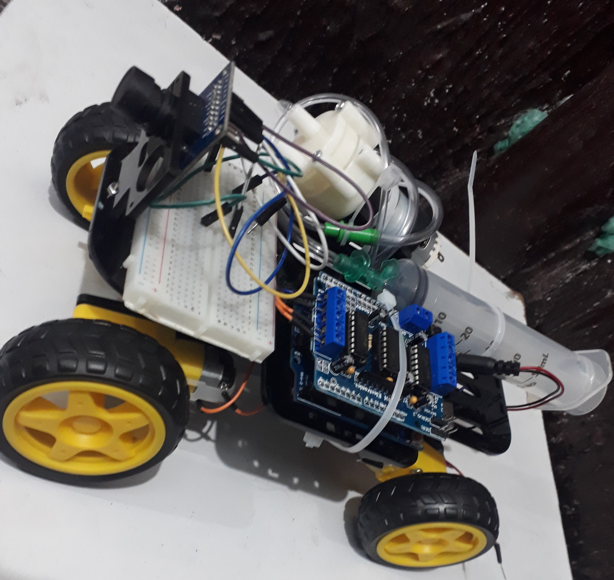
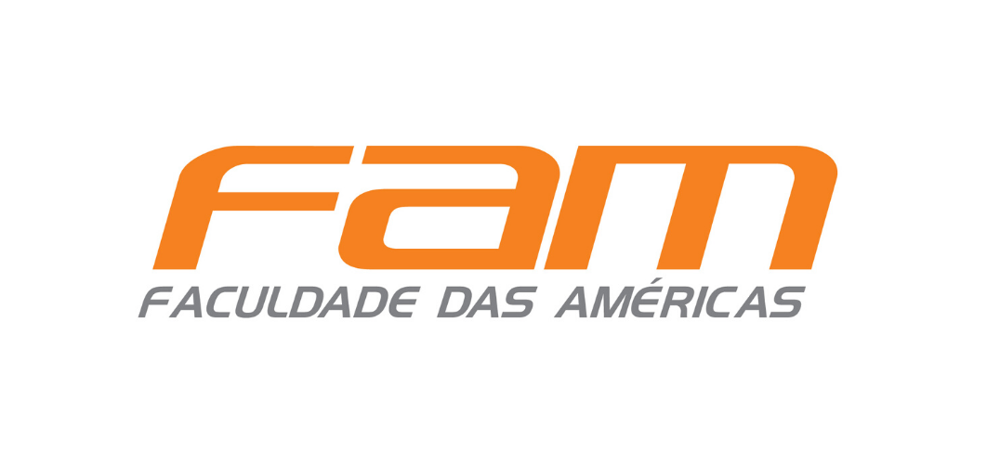

Páginas
The Rolb - Robô de Combate a Incêndio
What is The Rolb?
The Rolb é um protótipo de um mini robô, criado nas aulas de IoT - (Internet of Things), na faculdade de Análise e Desenvolvimento de Sistemas. O objetivo desse robô e acessar locais de dificíl acesso, auxiliando o corpo de bombeiros, e ajudando na vizualização das chamas. O protótipo básicamente é um "Drone terrestre", com câmera, sensor de temperatura e entre outros componentes.
The Rolb
Olá eu sou Eduardo Proença
Eu sou um dos colaboradores desse projeto,
e ajudei no desenvolvimento do robô. Eu aprendi a utilizar placa arduino
e outros componentes nas aulas de IoT,
e a fazer alguns projetinhos como um semáforo por exemplo.
Criei essa página para resgistar esse primeiro projeto da faculdade,
e utilizar como portfólio para vagas de estágio.
Formação Acadêmica
Projeto realizado na Instituição FAM - Faculdade das Américas.
(Inicio - 28/07/2020) | (Término - 10/12/2022)
My Social Networks: